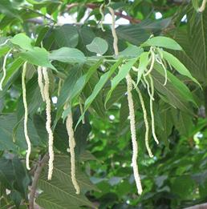

Despite appearances and the common English marketing name, this plant is in no way related to the birch tree. It is a member of the Moraceae family, the Mulberries. This large shrub is closely related to the Paper Mulberry, the bark fibers of which are used to make Japanese Washi paper and tissue.
While it grows all over the Philippines the male inflorescences and tender young leaves are only much used in the northeast (Luzon, etc.). Alokon is also a common non-native in Hawaii, but I don't know if anyone uses it for food there.
The photo specimens were previously frozen. In their natural state the inflorescences are much lighter in color (see photo below). The largest were about 5-1/4 inches long and about 0.275 inch diameter.
More on Mulberries

General: The male inflorescences of this large shrub are
seasonally available in the Philippines and then appear in markets in the
northeast of the islands. They are mainly used as an ingredient in
vegetable stews to add texture and a subtle aroma. The photo to the left
shows what they look like on the shrub. Photo by
Forest & Kim Starr distributed
under license Creative
Commons Attribution 3.0 Unported - attribution required, notification
appreciated.
Buying & Storing: These can be found in flat plastic bags in the frozen food cases of markets serving Philippine communities. Just keep them frozen until needed.
Cooking:: Since they can only be had frozen in North America, they are already lightly cooked, so they can be added to vegetable stews midway through the cooking. They can be cut to more convenient lengths if really long, but otherwise need no preparation. Alokon becomes somewhat mucilaginous when cooked (as it is in the frozen packages) and will add some body to the stew.
mb_alokonz 090901 - www.clovegarden.com